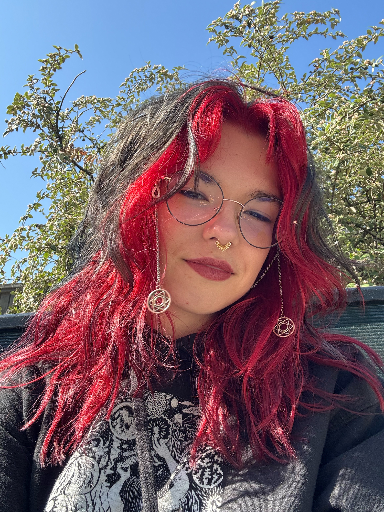

I'm a Slavic illustrator and designer based in Vancouver, with a passion for visual storytelling, character design, and worldbuilding. I've always been fascinated by stories and the different ways we can tell them. I find inspiration in nature, music, science, psychology, and the space between reality and imagination. I'm especially interested in how art can make people reflect on their own lives, choices, and perspectives. I believe visual storytelling has a unique ability to connect with people on both an emotional and intellectual level. Outside of art and design, I enjoy board games, puzzles, reading, travelling, and experimenting with different crafts. I'm always curious to learn something new, whether it's a scientific discovery, an unfamiliar culture, or a new way of making things.
I'm a (2027) graduate of Capilano University's IDEA School of Design, where I studied visual communication with a concentration in illustration. I'm drawn to purpose-driven projects that have something to say. I want my work to encourage curiosity, spark conversations, and make a positive impact, whether that's through exploring difficult subjects or showing familiar realities through an unexpected, sometimes magical lens. Versatility is an important part of my practice. I take pride in working across different styles and techniques rather than limiting myself to one visual approach. For me, the idea comes first, and the style should serve the story. I enjoy experimenting, solving visual problems, and finding unexpected ways to communicate a message. My work spans narrative illustration, character design, editorial illustration, book design, and graphic design. I particularly enjoy projects that involve research, conceptual development, and building a visual world around an idea. And while I work with a variety of traditional and digital tools, Adobe Illustrator has a special place in my creative process. I love the precision and flexibility of vector illustration and the challenge of translating complex ideas into carefully constructed shapes.